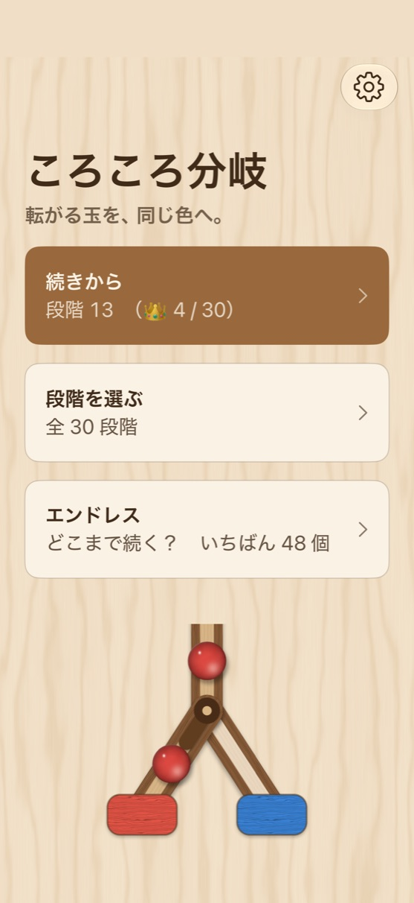
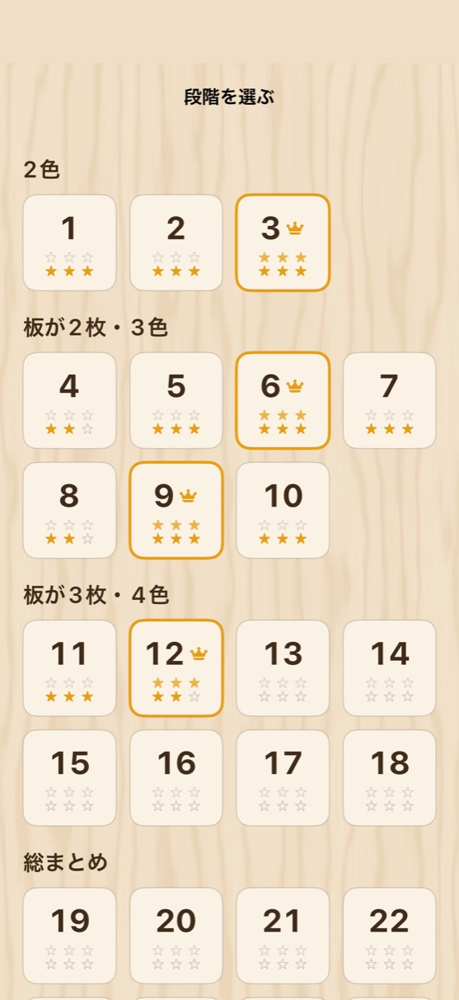
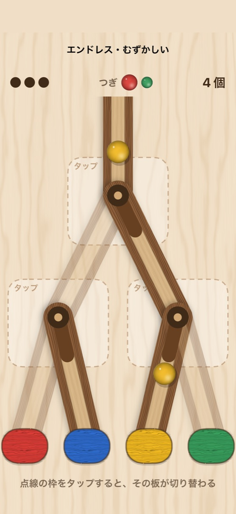

FEATURES
できること
板を切り替えて仕分け
玉は勝手に転がってきます。分かれ道の板を切り替えて、玉と同じ色の受け皿へ。3回外すと失敗です。
かんたん・むずかしい
色の方をタップすると道が全部つながる「かんたん」と、板を1枚ずつ切り替える「むずかしい」。両方でクリアすると王冠。
30段階
2色から始まり、板が2枚・3色、板が3枚・4色へ。どの段階も、人が反応できる速さに合わせています。
エンドレス
上限なし。3回外すまで、どんどん速くなります。盤を選べて、入った数と続いた時間の最高が残ります。
SCREENS
画面



PRICE
値段
無料
¥0
- 全30段階とエンドレス
- 失敗した時の「続ける」（1回の遊びで1回。短い動画を見ると使えます）
- はじめの画面・段階を選ぶ画面の下と、段階の合間に広告（遊んでいる画面には出ません）
広告なし
¥600（買い切り）
- 広告が全部消える
- 「続ける」も動画なしで使える
2026年12月13日までに入れた方へ
2026年12月13日までにこのアプリを入れた方は、買わなくてもずっと広告なしです。
2026年12月13日までにこのアプリを入れた方は、買わなくてもずっと広告なしです。
FAQ
よくある質問
速すぎて追いつけません
はじめは「かんたん（色をタップ）」で遊んでみてください。行かせたい色の方をタップするだけで、道が全部つながります。
板が2枚以上ある時、どこを押せばいいですか？
「むずかしい」では、板のまわりに点線の枠が出ます。その枠をタップすると、その板だけが切り替わります。
進み具合は引き継げますか？
進み具合はiPhoneの中だけに保存しています。アプリを削除すると、進み具合も消えます。
「広告なし」を買ったのに広告が出ます
設定（はじめの画面の右上の歯車）→「購入を復元」を押してください。購入に使った Apple アカウントでサインインしている必要があります。
SUPPORT
サポート
不具合・ご要望・ご質問は、メールでお知らせください。
お使いのiPhoneの機種・iOSのバージョン・アプリのバージョン（アプリの設定のいちばん下のバージョン）を書いていただけると、早く調べられます。